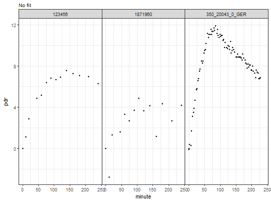
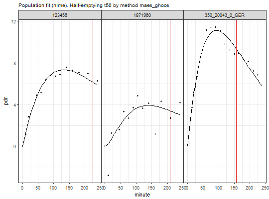

<!-- Generated by pkgdown: do not edit by hand -->
<!DOCTYPE html>
<html>
  <head>
  <meta charset="utf-8">
<meta http-equiv="X-UA-Compatible" content="IE=edge">
<meta name="viewport" content="width=device-width, initial-scale=1.0">

<title>Read any external files with breathtest data — read_any_breathtest • breathtestcore</title>

<!-- jquery -->
<script src="https://code.jquery.com/jquery-3.1.0.min.js" integrity="sha384-nrOSfDHtoPMzJHjVTdCopGqIqeYETSXhZDFyniQ8ZHcVy08QesyHcnOUpMpqnmWq" crossorigin="anonymous"></script>
<!-- Bootstrap -->
<link href="https://maxcdn.bootstrapcdn.com/bootswatch/3.3.7/cosmo/bootstrap.min.css" rel="stylesheet" crossorigin="anonymous">

<script src="https://maxcdn.bootstrapcdn.com/bootstrap/3.3.7/js/bootstrap.min.js" integrity="sha384-Tc5IQib027qvyjSMfHjOMaLkfuWVxZxUPnCJA7l2mCWNIpG9mGCD8wGNIcPD7Txa" crossorigin="anonymous"></script>

<!-- Font Awesome icons -->
<link href="https://maxcdn.bootstrapcdn.com/font-awesome/4.6.3/css/font-awesome.min.css" rel="stylesheet" integrity="sha384-T8Gy5hrqNKT+hzMclPo118YTQO6cYprQmhrYwIiQ/3axmI1hQomh7Ud2hPOy8SP1" crossorigin="anonymous">


<!-- pkgdown -->
<link href="../pkgdown.css" rel="stylesheet">
<script src="../jquery.sticky-kit.min.js"></script>
<script src="../pkgdown.js"></script>

<!-- mathjax -->
<script src='https://mathjax.rstudio.com/latest/MathJax.js?config=TeX-AMS-MML_HTMLorMML'></script>

<!--[if lt IE 9]>
<script src="https://oss.maxcdn.com/html5shiv/3.7.3/html5shiv.min.js"></script>
<script src="https://oss.maxcdn.com/respond/1.4.2/respond.min.js"></script>
<![endif]-->


  </head>

  <body>
    <div class="container template-reference-topic">
      <header>
      <div class="navbar navbar-default navbar-fixed-top" role="navigation">
  <div class="container">
    <div class="navbar-header">
      <button type="button" class="navbar-toggle collapsed" data-toggle="collapse" data-target="#navbar">
        <span class="icon-bar"></span>
        <span class="icon-bar"></span>
        <span class="icon-bar"></span>
      </button>
      <a class="navbar-brand" href="../index.html">breathtestcore</a>
    </div>
    <div id="navbar" class="navbar-collapse collapse">
      <ul class="nav navbar-nav">
        <li>
  <a href="../reference/index.html">Reference</a>
</li>
<li>
  <a href="../articles/index.html">Articles</a>
</li>
      </ul>
      
      <ul class="nav navbar-nav navbar-right">
        <li>
  <a href="https://github.com/dmenne/breathtestcore">
    <span class="fa fa-github fa-lg"></span>
     
  </a>
</li>
      </ul>
    </div><!--/.nav-collapse -->
  </div><!--/.container -->
</div><!--/.navbar -->

      
      </header>

      <div class="row">
  <div class="col-md-9 contents">
    <div class="page-header">
    <h1>Read any external files with breathtest data</h1>
    </div>

    
    <p>Uses <code><a href='breathtest_read_function.html'>breathtest_read_function</a></code> to determine the file type
and reads it if it has a valid format.</p>
    

    <pre class="usage"><span class='fu'>read_any_breathtest</span>(<span class='no'>files</span>)</pre>
    
    <h2 class="hasAnchor" id="arguments"><a class="anchor" href="#arguments"></a> Arguments</h2>
    <table class="ref-arguments">
    <colgroup><col class="name" /><col class="desc" /></colgroup>
    <tr>
      <th>files</th>
      <td><p>A single filename, a list or a character vector of filenames.</p></td>
    </tr>
    </table>
    
    <h2 class="hasAnchor" id="value"><a class="anchor" href="#value"></a>Value</h2>

    <p>A list of <code><a href='breathtest_data.html'>breathtest_data</a></code>, even if
only one file was passed. The list can be passed to <code><a href='cleanup_data.html'>cleanup_data</a></code>
to extract one concatenated data frame for processing with <code><a href='nls_fit.html'>nls_fit</a></code>,  
<code><a href='nlme_fit.html'>nlme_fit</a></code>, <code><a href='null_fit.html'>null_fit</a></code> (no processing) or
<code>stan_fit</code> in separate package <code>breathteststan</code>.</p>
    

    <h2 class="hasAnchor" id="examples"><a class="anchor" href="#examples"></a>Examples</h2>
    <pre class="examples"><div class='input'><span class='no'>files</span> <span class='kw'>=</span> <span class='fu'>c</span>(
  <span class='fu'>system.file</span>(<span class='st'>"extdata"</span>, <span class='st'>"IrisCSV.TXT"</span>, <span class='kw'>package</span> <span class='kw'>=</span> <span class='st'>"breathtestcore"</span>),
  <span class='fu'>system.file</span>(<span class='st'>"extdata"</span>, <span class='st'>"350_20043_0_GER.txt"</span>, <span class='kw'>package</span> <span class='kw'>=</span> <span class='st'>"breathtestcore"</span>),
  <span class='fu'>system.file</span>(<span class='st'>"extdata"</span>, <span class='st'>"IrisMulti.TXT"</span>, <span class='kw'>package</span> <span class='kw'>=</span> <span class='st'>"breathtestcore"</span>)
 )
 <span class='no'>bt</span> <span class='kw'>=</span> <span class='fu'>read_any_breathtest</span>(<span class='no'>files</span>)
 <span class='fu'>str</span>(<span class='no'>bt</span>, <span class='fl'>1</span>)</div><div class='output co'>#&gt; List of 3
#&gt;  $ :List of 23
#&gt;   ..- attr(*, "class")= chr "breathtest_data"
#&gt;  $ :List of 23
#&gt;   ..- attr(*, "class")= chr "breathtest_data"
#&gt;  $ :List of 23
#&gt;   ..- attr(*, "class")= chr "breathtest_data"</div><div class='input'> <span class='co'># Passing through cleanup_data gives a data frame/tibble</span>
 <span class='no'>bt_df</span> <span class='kw'>=</span> <span class='fu'><a href='cleanup_data.html'>cleanup_data</a></span>(<span class='no'>bt</span>)
 <span class='fu'>str</span>(<span class='no'>bt_df</span>)</div><div class='output co'>#&gt; Classes <U+0091>tbl_df<U+0092>, <U+0091>tbl<U+0092> and 'data.frame':	115 obs. of  4 variables:
#&gt;  $ patient_id: chr  "123456" "123456" "123456" "123456" ...
#&gt;  $ group     : chr  "A" "A" "A" "A" ...
#&gt;  $ minute    : num  0.01 10 20 45 60 75 90 105 120 140 ...
#&gt;  $ pdr       : num  0 1.11 2.86 4.87 5.19 ...</div><div class='input'> <span class='co'># If you want data only, use null_fit()</span>
 <span class='fu'>plot</span>(<span class='fu'><a href='null_fit.html'>null_fit</a></span>(<span class='no'>bt_df</span>))</div><div class='input'> <span class='co'># Plot population fit with decimated data</span>
 <span class='fu'>plot</span>(<span class='fu'><a href='nlme_fit.html'>nlme_fit</a></span>(<span class='no'>bt_df</span>))</div></pre>
  </div>
  <div class="col-md-3 hidden-xs hidden-sm" id="sidebar">
    <h2>Contents</h2>
    <ul class="nav nav-pills nav-stacked">
      <li><a href="#arguments">Arguments</a></li>
      
      <li><a href="#value">Value</a></li>
      
      <li><a href="#examples">Examples</a></li>
    </ul>

  </div>
</div>

      <footer>
      <div class="copyright">
  <p>Developed by Dieter Menne, Menne Biomed Consulting Tübingen</p>
</div>

<div class="pkgdown">
  <p>Site built with <a href="http://hadley.github.io/pkgdown/">pkgdown</a>.</p>
</div>

      </footer>
   </div>

  </body>
</html>
